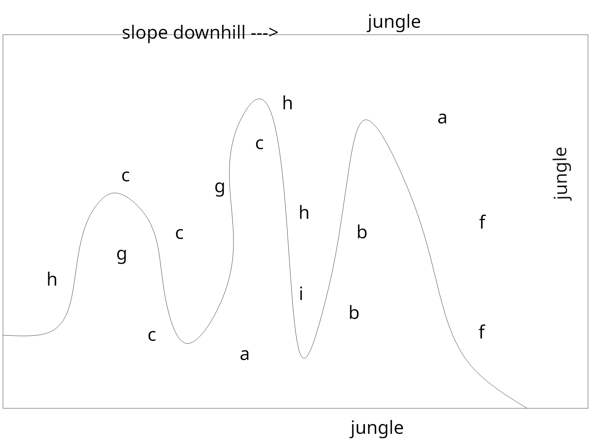

15. January 2022
Understory

Planting An Understory Orchard
We live on 10 acres on the edge of a 100 acre jungle reserve, with a further contiguous 100 acres undeveloped. We’re between Corcovado and Quetzali national parks, in an area that local conservation groups are working to maintain and deepen as a wildlife corridor. Troops of monkeys come swinging through the garden multiple times a week, parrots and toucans are daily visitors, hummingbirds buzz between the canopy and the flowers in our front garden; we’ve recorded a puma on our trailcam, and a couple of weeks back I saw a pack of fifteen peccaries, some big enough to be bad news if you got on the wrong end of their intentions. This is all to say that I made it a ground rule to not destroy jungle in order to expand the garden; I’m working within the parameters of the land that’s already been developed or disturbed.
On the west of the driveway is a NW facing slope which had at some point in the past been cleared. Three enormous trees (referred to as Maya by Mila, our neighbor - I’ve yet to find a formal identification) are clustered fairly close to each other at the top of the hill, large buttress roots grasping firmly to the hill’s summit. Several years years ago (before we moved in) a huge limb, itself as big as a large tree, had broken off one of them and smashed down across the slope, perhaps taking out some smaller trees in the impact. Several smaller trees are established on the slope, all with trunks less than a 12" diameter. Otherwise the hill was overrun with vines, a thick bladed grass, and scrubby bushes.
We had been contemplating building a guest cottage on the hill, but after constructing our workshop in another previously cleared spot, we decided that we could add a guest bedroom within the footprint of the workshoup building, so I started thinking about planting fruit trees on the hill instead. I started researching fruit trees that would do well in the understory, and buying them from various nurseries.
Over the xmas break, I sharpened up my machete and started cutting the grass and vines. I made enough progress to realize that there was quite a bit of space. I then hired Mila to do another day and a half of additional prep. We cut one small tree (4" trunk) and otherwise left all of the trees intact, but completely cleared the grass, vines, and scrub. Mila found a terracipio sunning itself on the leaf of a hellaconia - from what I understand, he introduced it to his machete, and an in depth conversation was had.
Site Planning
Once cleared, I staked out paths winding back and forth in switchbacks down the slope. We then raked all of the chopped up material into the beds between the paths, and pushed the cut up logs (from the giant limb) down to the bottom of the hill, where we stacked them. (Future mulch, maybe, once they decompose.)


I then made a list of the plants I’d bought, and included their mature height, as follows:
a) 2 x Avocado (Bul 7); 20-30m
b) 3 x Pitanga (2 black, 1 red); 5-7m
c) 4 x Acerola Cherry; 4-6m
d) 2 x Moringa (selected for its leaves rather than fruit); 8-12m
e) Brazilian spinach (edible ground cover)
f) 2 x Caimoto; 10-35m
g) 2 x Jaboticaba
h) 3 x Borojo
i) 1 x Mango
All but the Mango will, by reputation, do well in understory / partial shade.
I then plotted out the trees on a diagram, for the most part putting the taller trees either at the north or at the bottom of the hill, aiming to preserve as much light to the smaller species as possible. I figured out that I didn’t have room for the Moringa on this site, so they will have to find another home somewhere. This is a relatively shady site, getting some light from the east as the sun rises over the ridge, and mostly dappled light throughout the day.

Planting
Diagram done, there was nothing else to do but plant it out. After the trees were in, I planted in between them with the brazilian spinach, some bougainvillea cuttings that I’d rooted, and “good luck plant” to mark the paths.
I’ll make further posts to track the growth of all of these fruits, and update this post to show development of the orchard.